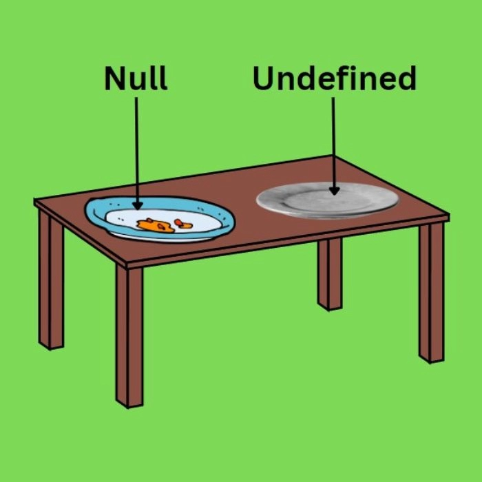

1.Discuss the scope of var, let, and const
There are three keywords in JavaScript that can be used to declare variables: let, var, and const.
Each keyword has different rules and implications for how the variables they create can be used.
1. let: The let keyword declares a block-scoped local variable, optionally initializing it to
a
value.
Block-scoped means that the variable is only available within the block it was declared in, which is
usually denoted by curly braces {}.
Examples:
function add(){
let a = 5;
let b =2;
let result =a+b;
return result;
}
consol.log(b); // Create a error
2. var: The var keyword declares a function-scoped or global variable, optionally initializing it to a value. Function-scoped means that the variable is only available within the function it was declared in. Global variables are available throughout your entire code.
Examples:
{
var x = 5;
var y = 6;
var z = x + y;
}
consol.log(z); // 11
3. const: The const keyword declares a block-scoped, immutable constant variable, i.e. a variable that can’t be reassigned. Constants are also called “immutable variables”, but that’s a bit of a misnomer since they are actually variables – just ones that can’t be reassigned. Examples:
const y = 6;
y = 10; // Create a error
2.Tell us the use cases of null and undefined
Use Cases for Undefined:
Variable Initialization: When you declare a variable without assigning an initial value, it
is automatically initialized to "undefined." This is common when you plan to assign a value later in
the program.
Function Parameters: If a function is called with fewer arguments than it expects, the
missing parameters are automatically set to "undefined." This allows you to handle cases where
optional arguments are omitted.
Missing Object Properties: When you try to access a property that doesn't exist on an object,
the result is "undefined." This can be useful for checking whether a property exists before using
it.
Implicit Returns: If a function doesn't explicitly return a value, it implicitly returns
"undefined." This can occur if you forget to include a return statement in your function.
Scope: Variables declared in a scope but not assigned a value before use will hold the value
"undefined." This can help you identify variables that need proper initialization.

Use Cases for Null:
Explicit Absence: You can assign the value "null" to indicate that a variable or property
intentionally has no value. This is often used when you want to explicitly indicate the absence of
data.
Memory Management: In languages with garbage collection, setting a reference to "null" can
help release memory associated with an object that is no longer needed. This can prevent memory
leaks and improve performance.
Checking for Validity: You might use "null" to indicate that a value is not available or
valid. For example, a function that searches for an element in a collection might return "null" if
the element is not found.
Interacting with APIs: Some APIs or functions might return "null" to indicate errors or
absence of data. This can help your code handle different scenarios gracefully.
Conditional Logic: You can use "null" in conditional statements to check whether a value
exists or not. This can be particularly helpful for input validation.
3.What do you mean by REST API?
A REST API is an API that conforms to the design principles of the REST, or representational state
transfer architectural style.
To make the API service RESTful, six guiding constraints must be satisfied:
Use of a uniform interface (UI): To have a uniform interface, multiple architectural constraints are
required to guide the behavior of components. Additionally, resources should be unique so they are
identifiable through a single URL.
Client-server based: The uniform interface separates user concerns from data storage concerns. The
client’s domain concerns UI and request-gathering, while the server’s domain concerns focus on data
access, workload management, and security. The separation of client and server enables each to be
developed and enhanced independently of the other.
Stateless operations: Request from client to server must contain all of the information necessary so
that the server can understand and process it accordingly. The server can’t hold any information
about the client state.
RESTful resource caching: Data within a response to a request must be labeled as cacheable or
non-cacheable.
Layered system: REST allows for an architecture composed of hierarchical layers. In doing so, each
component cannot see beyond the immediate layer with which they are interacting.
Code on demand: Because REST APIs download and execute code in the form of applets or scripts,
there’s more client functionality. Oftentimes, a server will send back a static representation of
resources in the form of XML or JSON. Servers can also send executable codes to the client when
necessary.